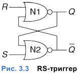
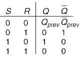
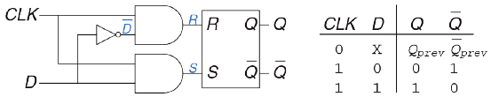
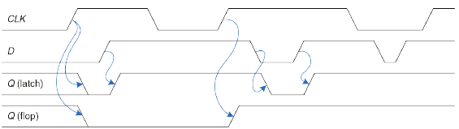
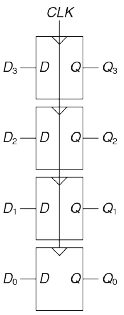

RS - Trigger
 
При поступлении 1 на S и R входы, поведение выходов триггера непредсказуемы.
D - Trigger
А точнее просто D-Защелка.

Полноценный D-триггер иногда называется MS-триггером и выполнен по схожей схеме, но с присутствием инфертированного входа RESET.
Такой триггер работает по фронту импульсов CLK и сохраняет свое значение до следующего фронта.
Пример работы защелки (latch) и триггера (flop):

Register
N-разрядный регистр - это набор из N D-триггеров с общим тактовым сигналом. Таким образом все биты регистра обновляются одновременно.

У некоторых триггеров имеется вход EN (enable). Когда на EN подается 1, то такой триггер ведет себя как обычный D-триггер. Если на EN лог 0, то триггер игнорирует тактовые сигналы, сохраняя свое состояние.